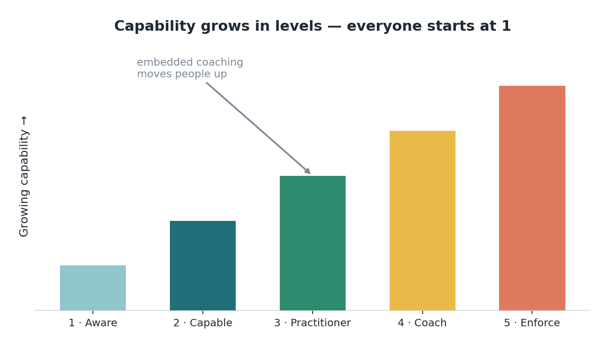

Edisi 12 — Commit & Develop: pilihan, coaching, dan kemitraan skill
Ada satu momen di setiap perubahan yang nyata, di mana seseorang berhenti sekadar ikut arus dan mulai memiliki perubahan itu. Momen itu adalah pilihan, dan itu nggak bisa dilewati atau diperintahkan. Kamu bisa menginformasikan seseorang, kamu bisa mendukung mereka, tapi kamu nggak bisa berkomitmen buat mereka — komitmen itu sesuatu yang dilakukan seseorang dari dalam diri. Leader terbaik yang pernah saya lihat mengerti ini, jadi alih-alih mendorong lebih keras, mereka memperluas zona pilihan: mereka kasih orang-orang keleluasaan nyata soal bagaimana perubahan itu muncul di pekerjaan mereka sendiri.
Saya juga mau bilang sesuatu yang jujur, yang sering dilewatkan dari memo perubahan yang penuh semangat: waktu sebuah peran dirancang ulang, sering ada rasa kehilangan. Kalau sebagian dari pekerjaanmu — bagian yang kamu jago di situ, mungkin kamu bangga — berpindah ke agent, wajar buat merasa kehilangan yang nyata, meskipun versi baru dari peran itu lebih baik. Berpura-pura kehilangan itu nggak ada, nggak membantu siapa pun. Menyebutnya, membantu. Orang bergerak lewat perubahan lebih cepat kalau mereka diizinkan mengakui apa yang lagi mereka tinggalkan, bukan buru-buru dilewatkan.
Begitu seseorang sudah memilih ikut, pengembangan itulah yang membawa mereka maju — dan jenis yang berhasil itu tertanam, bukan sesekali. Satu sesi training mengajarkan sebuah tool; coaching yang hidup di dalam pekerjaan sehari-hari mengajarkan sebuah kapabilitas. Bedanya besar banget. Orang nggak membangun skill yang beneran di workshop; mereka membangunnya dengan mencoba sesuatu di tugas nyata, dapat dorongan dari seseorang yang sedikit lebih jauh di depan, menyesuaikan, dan mencoba lagi. Pengembangan yang menyatu dengan pekerjaan, dengan coach di dekatnya, itulah cara kapabilitas beneran tumbuh.

Ini kelegaan yang paling ingin saya sampaikan, karena ini langsung menjawab ketakutan kehilangan keunggulanmu. Bahkan seiring agent mengambil alih lebih banyak tugas, skill yang khas manusia — judgment, relasi, tahu apa yang penting — itu justru yang makin dicari organisasi, bukan makin berkurang. Risetnya cukup mencolok: sebagian besar jam kerja mungkin bisa diotomasi, tapi sebagian besar skill yang benar-benar dicari pemberi kerja itu jenis yang bertahan lama dan manusiawi. Kariermu nggak menyusut seiring agent berkembang; itu bergerak naik ke pekerjaan yang cuma bisa dilakukan olehmu.
Itu kenapa saya mulai memikirkan ini sebagai kemitraan, bukan penggantian. Kamu dan agent bukan bersaing buat pekerjaan yang sama; kamu berdua membagi satu pekerjaan. Agent mengambil separuh yang tanpa lelah dan repetitif. Kamu memegang — dan tumbuh ke — separuh judgment-nya. Pengembangan, dalam kerangka ini, bukan soal belajar bertahan dari otomasi. Ini soal belajar memimpin asisten yang sangat mampu tapi sangat sempit cakupannya, yang mana itu skill baru yang beneran berharga tersendiri.
Jadi alur manusiawi dari tahap ini adalah pilihan, lalu kejujuran soal kehilangan, lalu pertumbuhan yang di-coach menuju versi yang lebih besar dari peranmu. Nggak ada yang otomatis dari semua ini dan nggak ada yang cepat, dan itu nggak apa-apa. Kita nggak sedang memproses orang lewat sebuah perubahan; kita sedang membantu rekan yang kita hormati tumbuh ke pekerjaan yang lebih manusiawi, bukan kurang. Itu butuh kesabaran dan kepedulian, dan itu persis jenis hal yang layak disabari dan dipedulikan.
Sumber
- Zona pilihan; kesedihan atas peran yang dirancang ulang; coaching yang tertanam; level sertifikasi — McKinsey (7 Agustus 2026).
- MGI: hingga 57% jam kerja bisa diotomasi, >70% skill yang dicari bertahan lama — via McKinsey (2026).